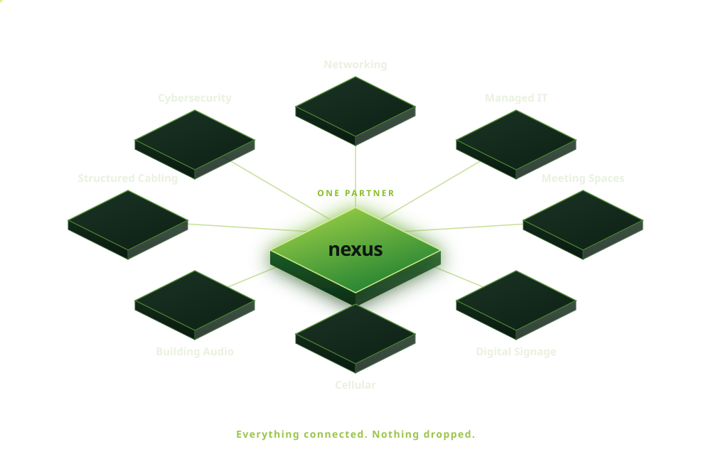

One core. Every system attached to it.
Graphics built to carry one idea: Nexus isn't a vendor beside your business, it's the core of it. Each is hand-drawn vector — a few KB, sharp at any size, animated in the browser with no video and no stock art.
The living core
An isometric Nexus server with the eight services it runs orbiting around it. The fan turns, status lights blink on their own beats, the plates hover, and real traffic runs both directions along every link — so the page feels like a system that's actually on.

The core, simplified
Same architecture, calmer execution — a single glowing core plate instead of the server. Better where the graphic supports copy rather than leading the page: a services index, a proposal spread, or a slide.

The Bond
Two rings genuinely interlocked — not overlapping, linked. A signal runs each ring continuously. Built with masks rather than a background-coloured gap, so the interlace is real and holds on dark or light.
Which one leads?
Tell us which of these to build the pages around and it becomes the visual spine of the brand — hero, services, proposal, and collateral.
Back to the overview